Synchronizing with the SAPUI5 Repository
Purpose
This tutorial describes how to use the SAPUI5 Repository and how to deploy the SAPUI5 application project on the ABAP Server. For this application type, the ABAP Server is used as a file share to serve browser requests. The SAPUI5 Repository is technically based on the BSP Repository of the ABAP Server.
Availability
The SAPUI5 Repository is available in SAP Business Suite systems with version 7.00 or higher containing the NetWeaver UI Add-On in the software component UI_INFRA. The Team Repository Provider functionality, which is available in the Eclipse IDE, is available in SAP Business Suite systems with version 7.31 containing the NetWeaver UI Add-On in the software components UI_INFRA and UI5_731.
The used SAPUI5 Libraries are available in SAP Business Suite systems with version 7.00 or higher containing the NetWeaver UI Add-On in the software component UISAPUI5.
From 7.40 SP1 on all required SAPUI5 parts are already part of software component SAP_UI.
As an alternative for SAP Business Suite system of version 7.00 and higher - especially until 7.31 - you may use the interactive ABAP report /UI5/UI5_REPOSITORY_LOAD or /UI5/UI5_REPOSITORY_LOAD_HTTP offering similiar functionality. Compared to the Team Repository Provider it does not offer a built-in code merge. Here an separate source code repository like git, Suberversion (SVN) etc. may be used. The report /UI5/UI5_REPOSITORY_LOAD is shipped via SAP note 1793771 "Up/Download SAPUI5 Application into/from UI5 Repository" and within SP03 of the NetWeaver UI Add-On. Find the corresponding documentation in the note and attached to the report.
Setup
- Make sure you install the SAPUI5 Application Development feature as well as the SAPUI5 ABAP Repository Team Provider feature in you Eclipse installation.
- For 7.31:
- Make sure that the software component SAP UI5 TEAM PROVIDER ON 731 (UI5_731) is installed on the 7.31 ABAP backend
- Make sure that SAP Note 1684342 is applied in the 7.31 ABAP backend.
Enabling Virus Scan during Upload
When uploading files to the SAPUI5 Repository, you can perform a virus scan.
As of SAP NetWeaver 7.00
with UI AddOn, SAP delivers the following virus scan profile for ABAP within the UI AddOn (from 7.40 SP1 on the virus scan profile is already part of the software component SAP_UI):
- /UI5/UI5_INFRA_APP/REP_DT_PUT
This profile is used by the SAPUI5 Repository API to store files in the SAPUI5 Repository based on BSP Repository.
For example: Upload of a local file using SAPUI5 Repository API /UI5/CL_UI5_REP_DT, method /UI5/IF_UI5_REP_DT~PUT_FILE from 7.00 on, or the SAPUI5 Team Repository Provider in 7.31 or 7.40.
The profile is deactivated when delivered. To activate it, first create at least one basis profile and save it as the default profile. You can then activate one of the delivered profiles. By default, it links to a reference profile, which is the default profile. For more information, see SAP Help Portal:
- ABAP-Specific Configuration of the Virus Scan Interface (7.00)
- ABAP-Specific Configuration of the Virus Scan Interface (7.31)
Remarks
- Only CR+LF is supported as a new text file line delimiter.
- To set the new text file line delimiter in Eclipse, go to Window → Preferences, under General → Workspace change New text file line delimiter → Other: to Windows.
- To change the new text file line delimiter in Eclipse for an existing project, go to project Properties, under Resource change New text file line delimiter → Other: to Windows.
- To change the new text file line delimiter in Eclipse for an existing file, open the file and choose File → Convert Line Delimiters to → Windows.
- Not all code pages (text file encoding) are supported.
- To set the text file encoding for new files in Eclipse, choose Window → Preferences, under General → Workspace change Text file encoding → Other: to UTF-8.
- To change the text file encoding in Eclipse for an existing project, go to project Properties, under Resource change Text file encoding → Other: to UTF-8.
- To change the text file encoding in Eclipse for an existing file, go to file Properties, under Resource change Text file encoding → Other: to UTF-8.
- If you view the BSP pages on the ABAP server, the might look different to the version in Eclipse or at runtime:
- Trailing spaces in text lines are escaped with " " in the respective BSP pages.
- Lines longer than 254 are broken into several lines and have a + on position 255.
Sharing the SAPUI5 Application Project with the SAPUI5 Repository
Purpose
You want to upload a new SAPUI5 Application into a new BSP Application on the ABAP server.
Prerequisites
- You have created a SAPUI5 Application using the SAPUI5 Application Tool, see Creating a SAPUI5 Application Project.
- Optionally you have tested the SAPUI5 Application locally in Eclipse, see Testing the SAPUI5 Application in Eclipse.
- The ABAP system you are using needs to be available in your SAP GUI Logon group. It is recommended to enable Single-Sign-On.
Creation of BSP Application
It is possible to create the BSP application with all required ICF nodes on the ABAP server remotely from Eclipse. However there might be cases in which this is not possible automatically:
- if the ABAP system is an SAP system (not a customer system) and the name of the BSP application and ICF node is in the customer namespace (for example, ZMYAPP)
- if the BSP application contains a SAP customer / SAP "development" namespace and that namespace has already been created in another system (for example, /ABC/MYAPP).
In these cases the BSP Application has to be created manually with the following steps before sharing:
- In the ABAP system, call transaction SE80. Go to the Repository Browser, and select BSP Application from the dropdown menu.
- Create a BSP application and enter /UI5/CL_UI5_BSP_APPLICATION as the name of the application class.
- Save and activate the application.
- Next, call transaction SICF, where you create a SAPUI5 application-specific ICF node.
- In the Service Path field, select /sap/bc/ui5_ui5/sap as the path (or alternatively the respective namespace /sap/bc/ui5_ui5/<namespace>), and choose Execute.
- In the context menu for the sap (or the respective namespace) node, choose New Sub-Element.
- In the Create a Service Element dialog, use the same name as for the BSP application you created as the Name of Service Element to Be Created and choose Enter.
- Provide a description text for the ICF node and choose Save.
- Return to the tree and position the cursor on the new service node.
- Right-click the new service node to call the context menu, and choose Activate Service, then Yes.
Procedure
The SAPUI5 application project can be shared with the SAPUI5 Repository as follows:
- In Eclipse, go to the Project Explorer view and select the required SAPUI5 Application Project.
- In the context menu of the selected SAPUI5 Application Project, choose Team → Share Project….
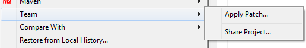
- Select SAPUI5 ABAP Repository as the repository type.
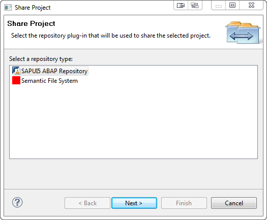
- Choose Next. Configure the connection to the ABAP system by using the Browse… button. You can only select system connections that are configured in the SAP GUI Launchpad.
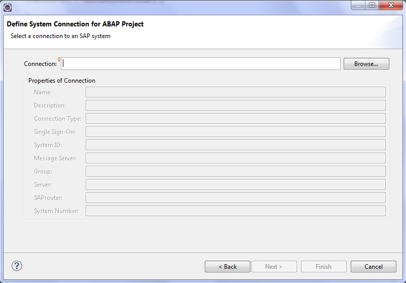
- Choose Next. Provide the required information for client, user, password, and language.
Note that choosing the correct logon language is important. When creating a new repository this will become the original language of the repository. For submitting files to the repository you have to be logged on in the original language, otherwise an error will occur.
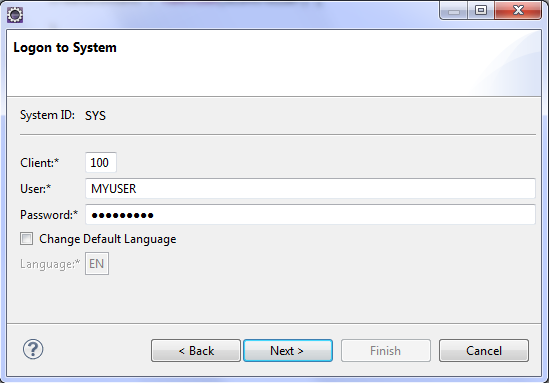
- Choose Next. The SAPUI5 application project can either be shared with an existing or with a newly created BSP application.
6a. Select Create a New BSP Application and enter name, description, and package (manually or via the Browse… button).
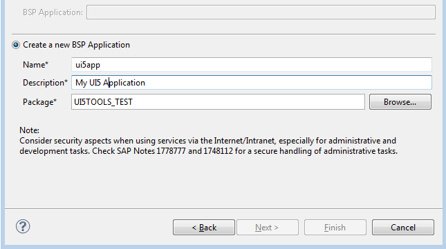
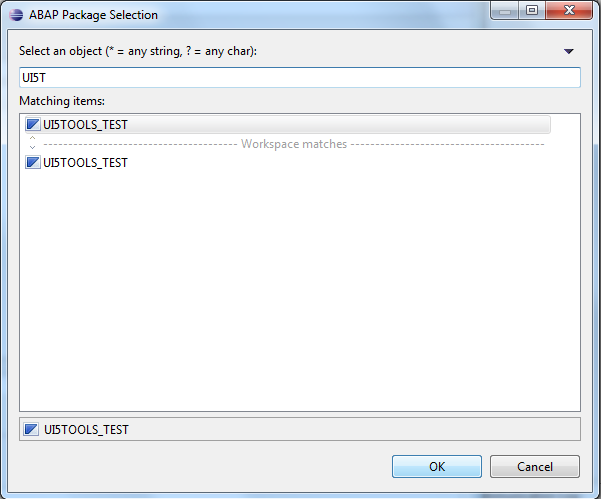
Choose Next. Note: If the new BSP application belongs to a transportable ABAP package, choose/create a transport request before finishing the wizard. Since transport requests are not automatically released, explicitly release them later using transaction SE09.
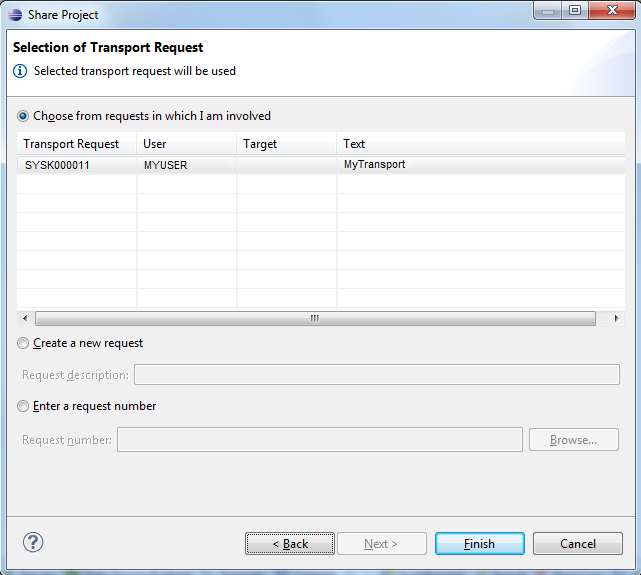
6b. Alternatively, if the BSP Application has been created manually or you want to download an existing one, choose Select a BSP Application and select an existing BSP application artifact for SAPUI5 from the list.
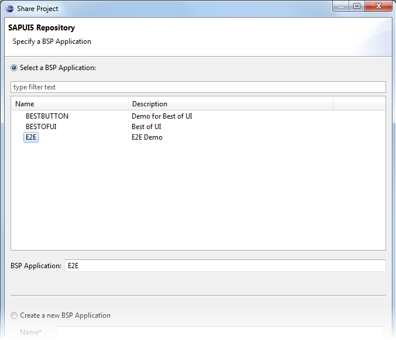
- Choose Finish.
Result
The selected SAPUI5 application project is now connected to the SAPUI5 BSP application artifact of the SAPUI5 Repository.
A description containing the ABAP system, client, user, language, and SAPUI5 BSP application name is displayed next to the project name.
If you have shared a SAPUI5 Application project, the SAPUI5 runtime library version of the server will be compared against the ones which have been installed into Eclipse and a warning might be shown. You can find more details about this check here.
Submitting the SAPUI5 Application Project to the SAPUI5 Repository
Prerequisites
- SAPUI5 Application has been created with the SAPUI5 Application Tool, see Creating a SAPUI5 Application Project.
- SAPUI5 Application Project has been shared with Team Provider, see Sharing SAPUI5 Application with SAPUI5 Repository.
Procedure
- In Eclipse, choose Team → Submit in the context menu of the selected SAPUI5 Application Project. If a logon is required, enter your password in the logon popup and choose OK.
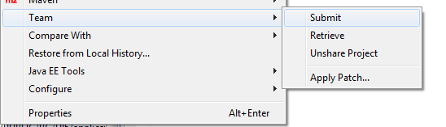
If you are submitting changes of a SAPUI5 Application project, the SAPUI5 runtime library version of the server will be compared against the ones which have been installed into Eclipse and a warning might be shown. You can find more details about this check here.
- Select all files. You will get a list of files that have been modified (added, updated, or deleted) in the client. The dialog shows the files for which submit conflicts exist, for example, if another user has submitted a newer file version in the meantime. Submit conflicts must be resolved before submission. If a file is already locked in a transport request, the corresponding request is shown in the dialog. If the SAPUI5 BSP application belongs to a transportable ABAP package, you have to choose a transport request. Note that transport requests are not automatically released when the files are submitted; you still have to release them using transaction SE09 in the underlying ABAP system.
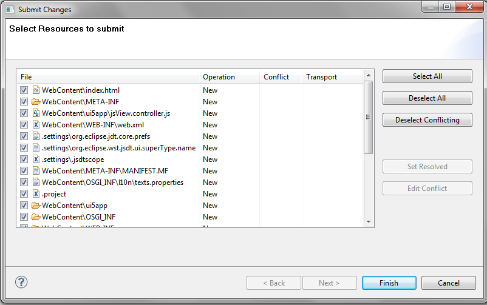
- Choose Finish.
Result
All files have been submitted to the SAPUI5 Repository and are available under the corresponding SAPUI5 BSP application.
The SAPUI5 application project can now be run from a Web browser calling the underlying ABAP system. You have the convenient option in the context menu for an HTML page of starting a browser with the correct URL from the BSP application displayed in the ABAP Workbench (SE80).
Remark
When using the team provider the file type is determined based on the Eclipse preferences. If you submit binary files and submit fails due to "End of line marker not supported" error, the binary file type is probably not registered as binary. To change that in Eclipse go to Window → Preferences and then to Team → File Content and register the binary file type as type binary.
Retrieving the SAPUI5 Application Project from the SAPUI5 Repository
Prerequisites
- You or someone else has created a SAPUI5 Application using the SAPUI5 Application Tool, see Creating a SAPUI5 Application Project.
- You or someone else has shared and submitted the SAPUI5 Application via the SAPUI5 Team Provider to the ABAP system, see Submitting SAPUI5 Application to SAPUI5 Repository.
- The ABAP system you are using needs to be available in your SAP GUI Logon group.
Procedure
- Create a generic project in Eclipse: Choose New → Project → General → Project. Enter the same name that is used for the SAPUI5 BSP application artifact in the ABAP system. Choose Finish.
- Share the SAPUI5 Application Project with Team Provider by choosing the existing BSP application, see Sharing SAPUI5 Application with SAPUI5 Repository.
- Synchronize the SAPUI5 application project as follows: In the context menu of the selected project, choose Team → Retrieve. Next, choose Select All to select the conflicting files as well.

- Choose Finish.
Result
Application-project-related files have been retrieved from the SAPUI5 Repository.
The SAPUI5 application project can now be run locally in Eclipse, see Testing the SAPUI5 Application in Eclipse.
Handling Conflicts
Submit / Retrieve Dialogs
When you are submitting or retrieving a change, the Conflict column on the Submit Changes or Retrieve Changes screen indicates whether there is a conflict for a file. The dialog shows the files for which submit/retrieve conflicts exist, that is, another user has submitted a newer file version in the meantime.
Submit conflicts must be resolved before submission.
If retrieve conflicts cannot be solved, the local files will be overwritten.
To set the conflict files as resolved, select the file (or multiple files) and choose Set Resolved. The same functionality is also available in the context menu of the selected file or files.
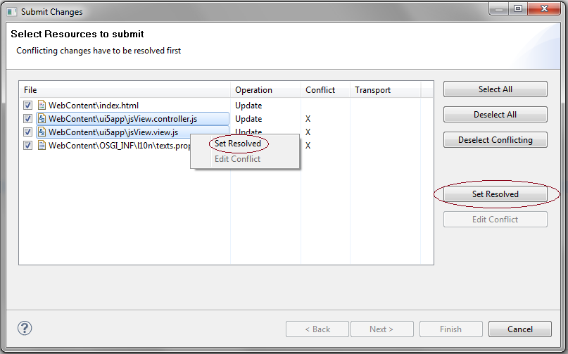
To display the conflicts with the Compare Editor, choose Edit Conflict.
 The Edit Conflict function is not supported for multiple file selection.
The Edit Conflict function is not supported for multiple file selection.


Once you have analyzed and edited the changes, you can choose Save and Set as Resolved for the conflict file.
Synchronize View
In the Synchronize view, you can compare the local and remote state.
- Mark the SAPUI5 application project in the Project Explorer in Eclipse.
- To open the Synchronize view, still in Eclipse, choose Window → Show View → Others …, then choose Team → Synchronize.
- To connect to a synchronization type, choose the Synchronize … icon, select Synchronize with SAPUI5 Repository as the synchronization type, and choose Finish.
- To update the Synchronize view, press F5 in the Synchronize view.
- The Synchronize view now shows differences between the local and remote state for all shared projects, by indicating whether the project is in sync with the repository or, if not, indicating the differences.
The synchronize view also allows you to schedule a periodic refresh of the state of the files in the backend.
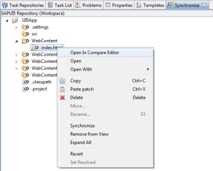 
Compare Editor
- From the Synchronize view, you open the Compare Editor by right-clicking the conflicting file and choosing Open in Compare Editor (or double-clicking the file) .
- You can now display and resolve the conflicts in the Compare Editor.
- Once the conflict is resolved, you can set the status of the file to "Resolved" by right-clicking the file and choosing Set Resolved. The file is now ready to be submitted.
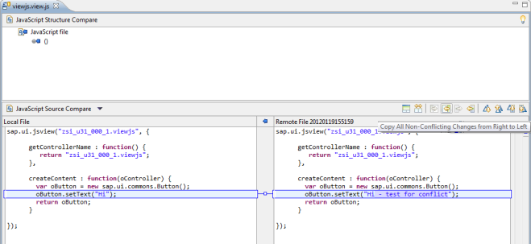
Further Information
The Eclipse Help provides information about:
- Synchronizing with the repository - information site in Eclipse: http://help.eclipse.org/indigo/index.jsp?topic=%2Forg.eclipse.platform.doc.user%2Ftasks%2Ftasks-115.htm
- Workspace synchronization - information site in Eclipse: http://help.eclipse.org/indigo/index.jsp?topic=%2Forg.eclipse.platform.doc.user%2Freference%2Fref-33.htm
- Compare editor - information site in Eclipse: http://help.eclipse.org/indigo/index.jsp?topic=%2Forg.eclipse.platform.doc.user%2Freference%2Fref-25.htm
- Although the description is based on the CVS repository, it offers some insights into the principles of synchronization and three-way comparison.
Testing the SAPUI5 Application Project on the ABAP Server
Purpose
To test a SAPUI5 Application that you have uploaded to an ABAP system, you can directly launch its public URL in a browser window.
Prerequisites
- You have shared a SAPUI5 Application via the SAPUI5 Team Provider with the ABAP system
- You have synchronized the application with the ABAP system
Procedure
You have the following options to launch a synchronized file (e.g. the index.html) on the ABAP server:
- Right click the file in the Project Explorer and choose Run As → Run On ABAP Server
- Open the file in an editor and from the Eclipse Run As menu choose Run On ABAP Server
The launch option is only available if the file is accessible via URL e.g. if it is in the WebContent folder.
Result
The URL of the selected file is opened in a browser window. The URL has the following pattern:
<protocol>://<host name>:<port number>/sap/bc/ui5_ui5/<namespace>/<application name>/index.html?sap-client=<client>&sap-ui-language=<language>&sap-ui-appcache=false
Please note that this URL contains test parameters which should not be set for productive usage!
You can also start the SAPUI5 application as follows:
Select the SAPUI5 application-specific Internet Communication Framework (ICF) node in transaction SICF under sap/bc/ui5_ui5/<namespace>/<application name>, and choose the context menu option Test Service. This will then automatically start your index.html page.
Cache Behavior for Application Resources
The sap/bc/ui5_ui5/<namespace>/<application name>/index.html page is never cached.
By default, the application files are stored in the browser cache for one year to speed up the performance in a productive environment. To get the latest changes you need to force your UI5 start page to refresh (e.g. by pressing CTRL + F5 on Windows systems). If forcing to refresh does not help you need to clear your browser cache.
The following is an experimental feature which might change in future versions of SAPUI5: If you are in development mode and like to immediately get the latest changes without refreshing your UI5 start page, you can add the experimental url parameter sap-ui-xx-devmode to the UI5 start page in order to force the browser to check if necessary whether there is a newer version of the application files available. When switching between development and productive mode, you need to force your UI5 start page to refresh. If this does not help you need to clear your browser cache.
Using the Application Cache Buster
If you activate the Application Cache Buster in the start page of the application in which the ui5 bootstrap is located by setting data-sap-ui-appCacheBuster="./", see Application Cache Buster, the UI5 application runtime handler on ABAP side supports the Application Cache Buster. In that case the ICM server cache on ABAP side as well as the browser cache is used and the Application Cache Buster mechanism ensures that all those resources which are supported by the Application Cache Buster mechanism are up to date.
Some Technical Remarks …
- Under typical conditions - e.g. when using UI5 applications or when doing development with the SAPUI5 ABAP Repository Team Provider or the UI5 repository load report - the application cache buster works fully automatically.
- After system- and language imports for a UI5 application into the SAP NetWeaver Web AS however it may be necessary (since the UI-AddOn 1.0 SP03) to reset its internal cache buster information. You may explicitly use or schedule the ABAP report /UI5/RESET_CACHEBUSTER to do so on all servers. As an alternative you can trigger the reset for a specific UI5 application from the browser using the URL "<application base path>/resetcachebuster".
- Also take note that the internal cache buster information for a UI5 application becomes outdated every two hours and is calculated anew then automatically. As a consequence the underlying server side cookies (with name 'cachebuster_info') get recalculated without the need of manual acitivity.
Creating Alias for ICF Node with SAP Corbu Logon Screen
To create an alias for the ui5_ui5 ICF node with an SAP Corbu logon screen (available with version 7.31 and higher), do the following:
- In the ABAP Suite system, call transaction SICF and choose Execute (F8).
- Choose → External Aliases (Shift+F6)
- Select the host, for example default_host, and choose Create New External Alias (F5).
- Enter a name in the External Alias field. The name must start with a slash, for example /ui5.
- On the Trg Element tab, select the target handler /default_host/sap/bc/ui5_ui5 in the tree, and double-click it.
- On the Error Page tab, select the Logon Errors tab, select System Logon, and choose Configuration.
- In the System Logon Configuration dialog, choose Define Service-Specific Settings.
- Under Select Display, select the fields that are to be displayed on the logon screen; these are generally System ID, Client, and Language.
- Under Logon Layout and Procedure and SAP Implementation, select Signature Design for Screen and SAP Corbu for Theme.
- If you choose Adjust Links and Images, you have the option under Adjustment of the Logon Page to Specify the URLs for the images you want to use instead of the standard images.
- Choose Input (Enter) to confirm the selection.
- Choose Save (Ctrl+S) to save the new alias.
For information on the ICF, see:
Troubleshooting with Communication Log
ABAP Communication Log
For troubleshooting purposes, you can use the ABAP Communication Log to log all REST requests from and to the ABAP system.
- To open the ABAP Communication Log view, go to Eclipse and choose Window → Show View → Others …, then ABAP → ABAP Communication Log.
- To start the logging, choose Start logging (and to stop it later, choose Stop logging).
- The ABAP Communication Log displays all requests between Eclipse and the connected ABAP system, giving you information about the HTTP method (GET, PUT, POST, DELETE), the query parameters of the request, and the HTTP status code.
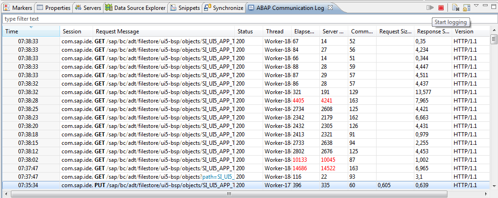
- If you click a request in the list, the details of this request are displayed (such as Request, Response, Stack Trace), giving you information about the HTTP header fields and the content of the request and the response.